Notre-Dame de Paris · comparison pass 4
Left: the reference photo. Right: the model from the same viewpoint. Write what differs in evidence.comparisons.
ref 0 · west front from the parvis (Haech, 2015, CC BY-SA 4.0) · 310.6°, -11.2°

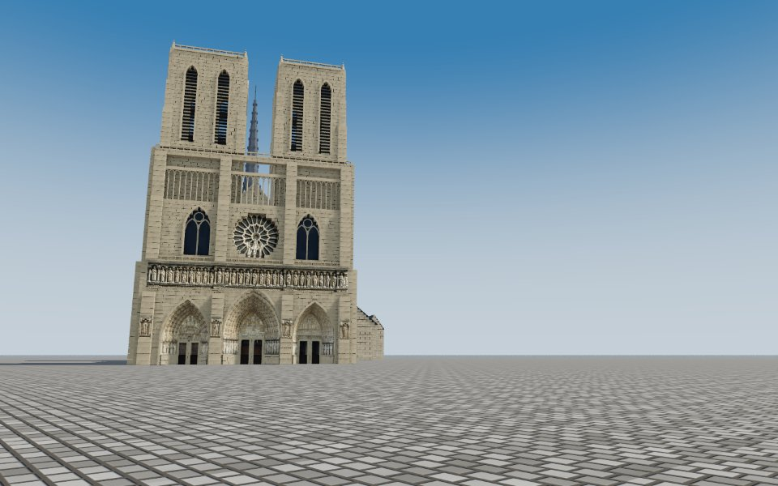
ref 1 · south-west, from the square René-Viviani (Tangopaso, 2011, public domain) · 235.1°, -6.1°

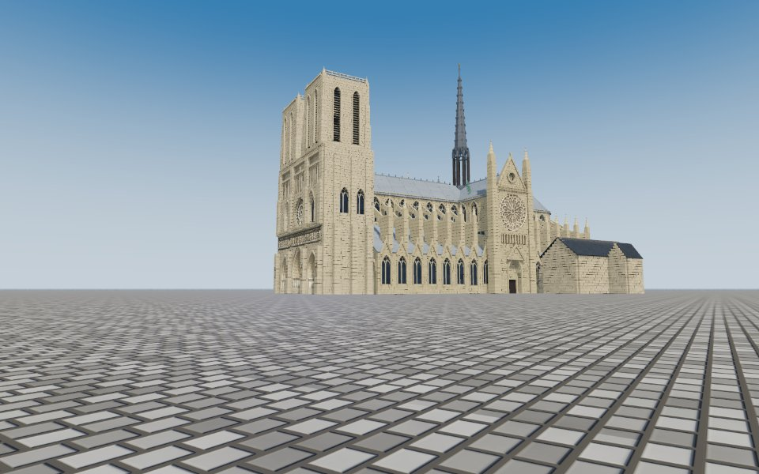
ref 2 · north-east, from the right bank of the Seine (Tangopaso, 2011, public domain) · 51°, -4.3°

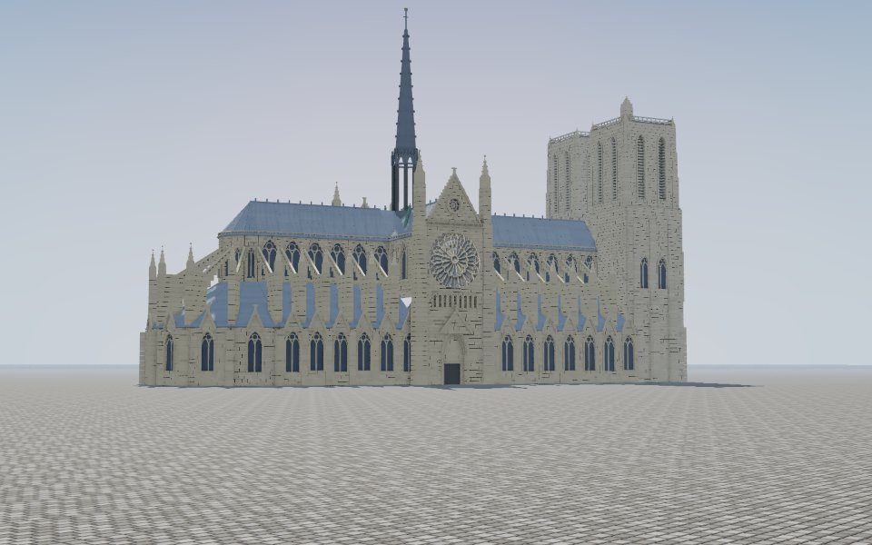
ref 3 · east, the chevet from the Seine (DXR, 2014, CC BY-SA 3.0) · 121.4°, -7.1°

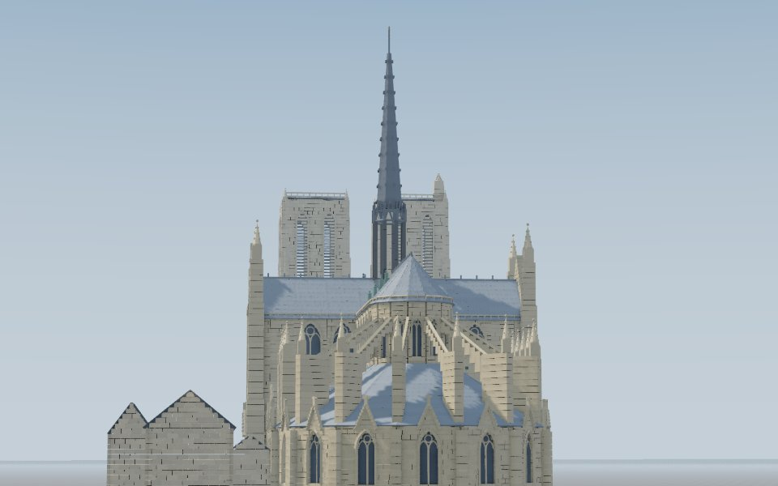
The end of every phase
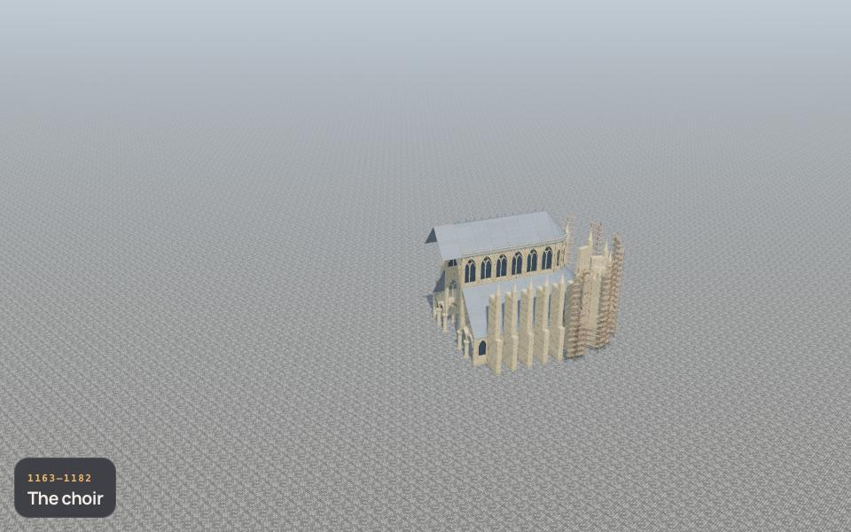
1163–1182 · The choir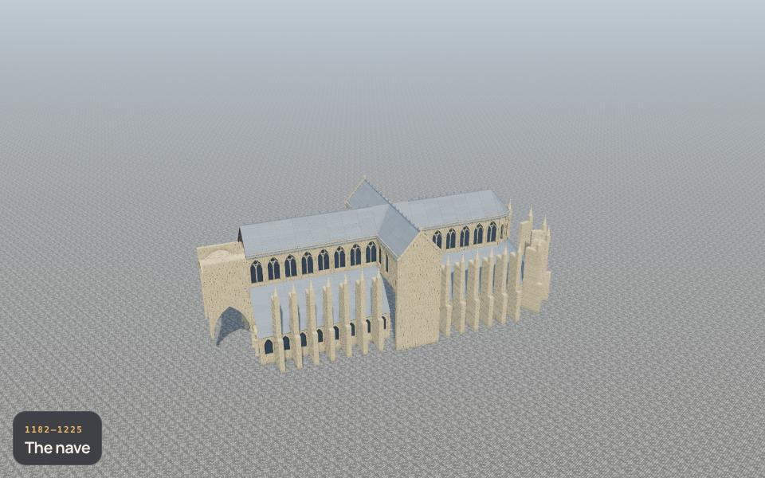
1182–1225 · The nave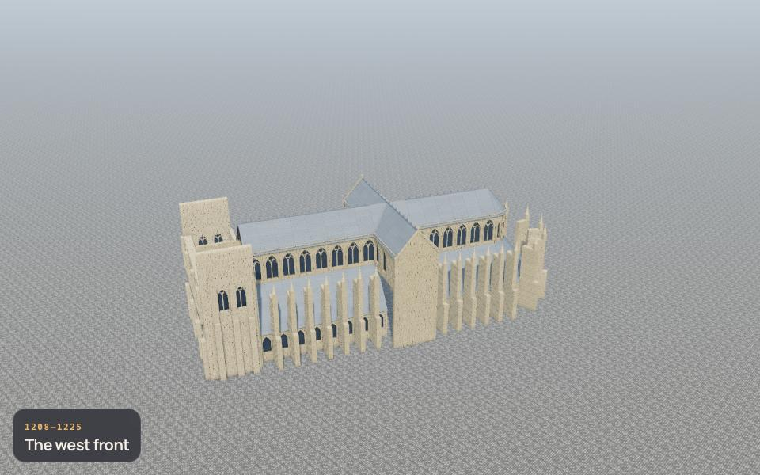
1208–1225 · The west front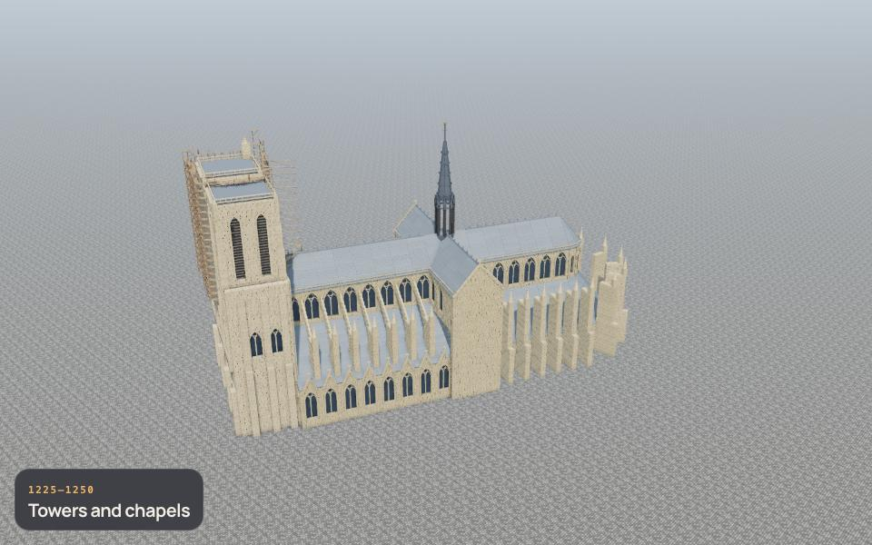
1225–1250 · Towers and chapels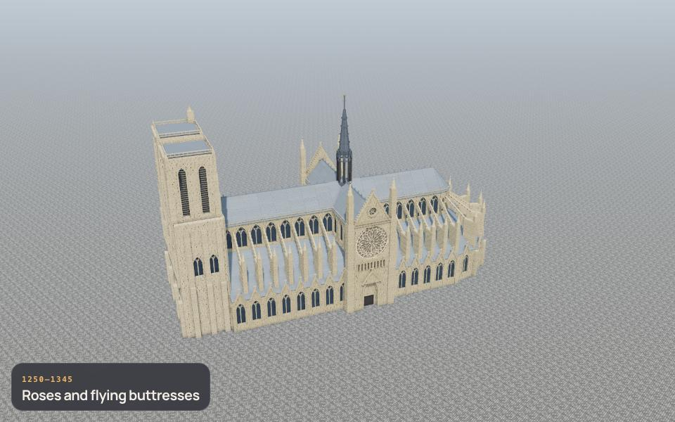
1250–1345 · Roses and flying buttresses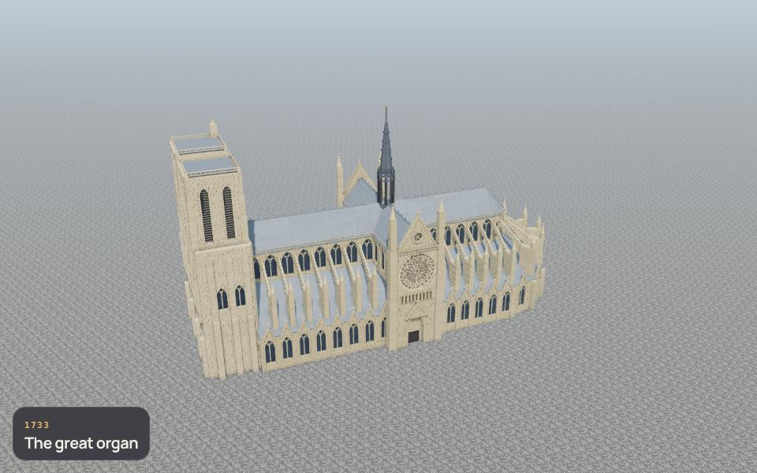
1733 · The great organ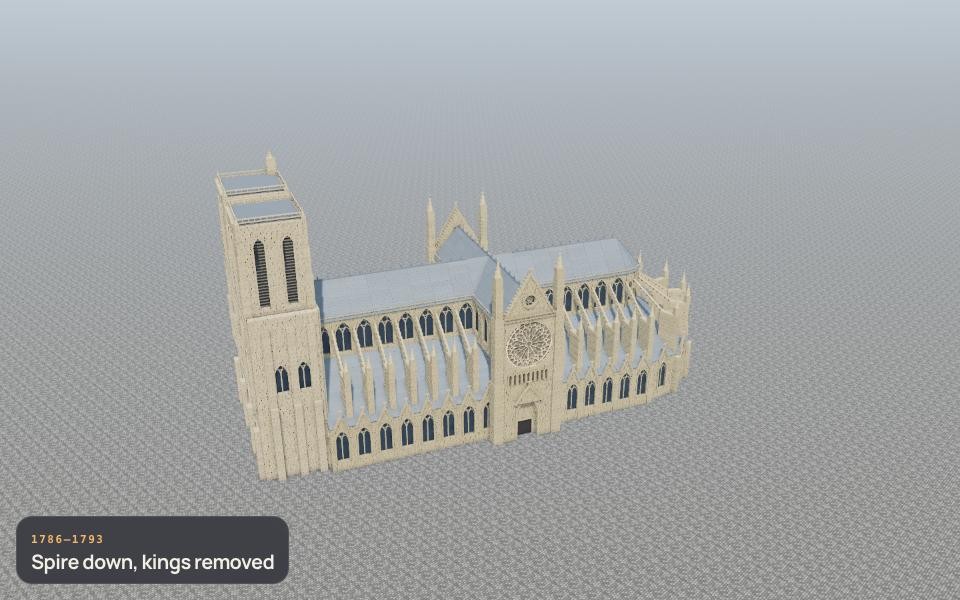
1786–1793 · Spire down, kings removed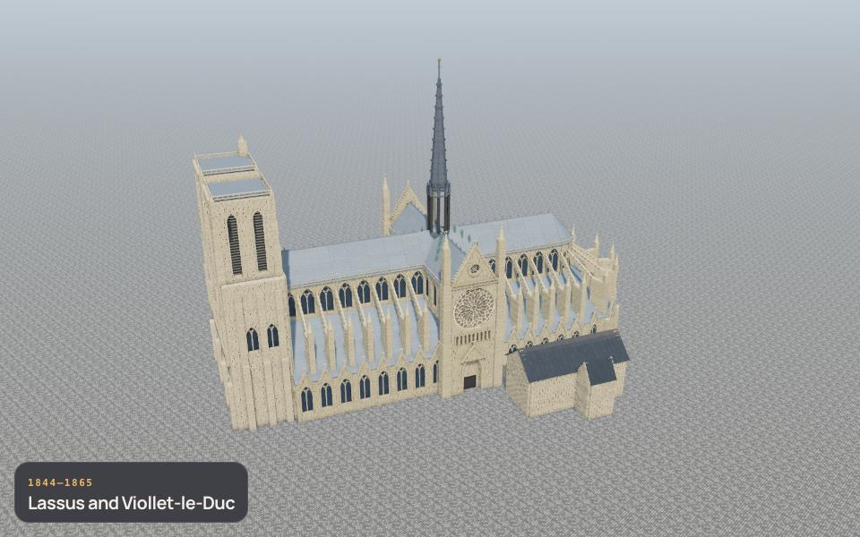
1844–1865 · Lassus and Viollet-le-Duc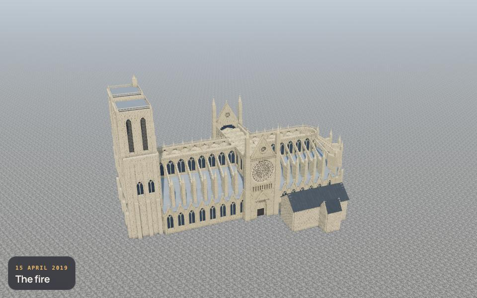
15 April 2019 · The fire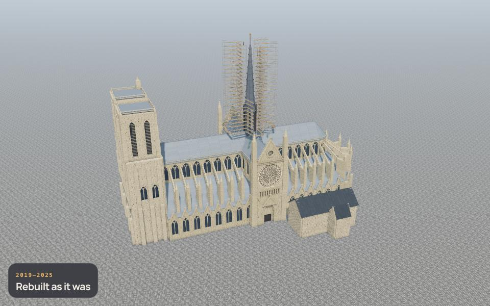
2019–2025 · Rebuilt as it was